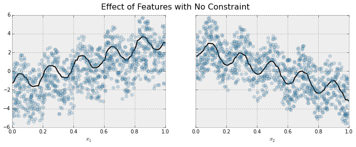
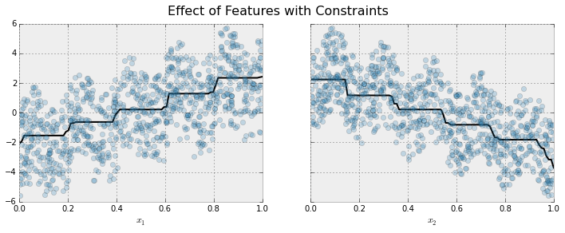
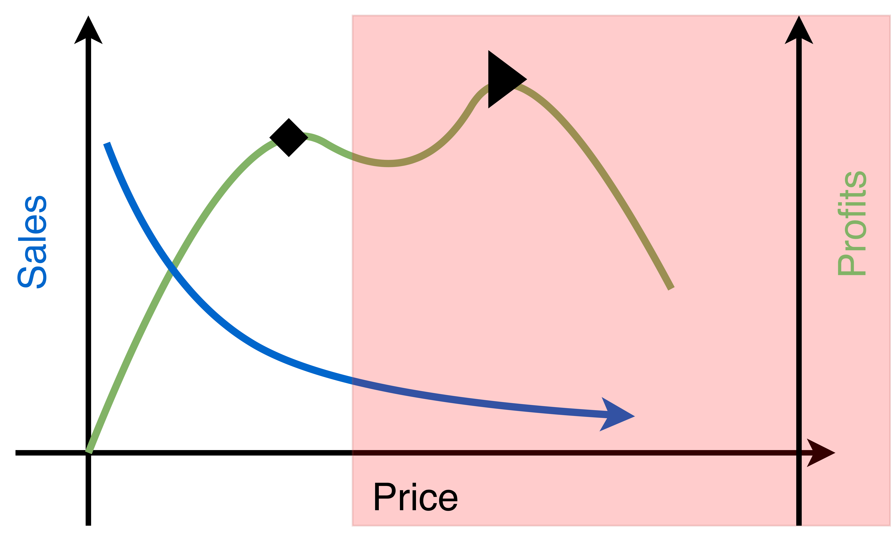

Optimización de Precios
Diego Kiedanski
4 de Agosto 2021
Introducción
- El problema de optimización de precios es central en la literatura económica.
- En general se asume una función de costos \(C\) y una función de demanda \(D\).
- Sabiendo ambas funciones se busca maximizar el revenue obtenido.
Ejemplo
- Curva de demanda \(D(p) = 200 - 50p\)
- \(\max_p D(p)*p - C(q)\)
- \(\max_p (200 - 50p)p - 2(200 - 50p)^2\)
- \(\max_p 200p - 50p^2 - 20000 + 10000p - 2500p^2\)
- \(\max_p -5050 p^2 + 20200 p - 20000\)
- Máximo = 200 y precio óptimo = 2
Optimización de precios en la práctica
- La curva de demanda no es conocida, se debe aprender de los datos.
- La competencia no es estática y se actualiza.
- Existen muchas restricciones de negocio que deben ser incorporadas en el modelo de optimización.
- No siempre se maximiza revenue, a veces es más importante atraer nuevos clientes a bajo precio.
Competencias de Precios en la práctica
The Making of a Fly
- Texto clásico en Biología, ya no se imprime más.
- En 2011 Amazon tenía 17 copias a la venta: 15 usadas y 2 nuevas.
- Las 15 usadas a $35.54
- Las nuevas a: $1,730,045.91 (+$3.99 de envío)
- Reference
The Making of a Fly cont.
- Para el final del día estaban a $3,536,675.57
- Una computadora estaba poniendo precios.
- El vendedor 1 ponía el precio a 0.9983 del vendedor 2.
- El vendedor 2 ponía el precio a 1.270589 del vendedor 1. (Por qué?)
- El precio llego hasta $23,698,655.93, antes de que fuese arreglado.
Billetes de avión Ref

Dos acercamientos posibles
Model Based
- Aprendemos un modelo de elasticidad de los datos
- Usamos el modelo de elasticidad como input a un problema de optimización
- Restricciones del negocio como constraints en el PO.
- Approach a usar en este curso
Model Free
- No intentamos aprender elasticidad
- Modelo de Reinforcement Learning o similar.
- Cambiamos precios muy seguido y vemos como la demanda cambia.
- Requiere la capacidad de iterar con alta frecuencia. No siempre fácil.
Más ejemplos de pricing en la práctica.
- Amazon: Amazon actualizó en promedio el precios de sus productos 2.5 millones de veces al día (2013).
- Aerolíneas: Muy dependiente del precio de la competencia: todos hemos buscado un pasaje y ver como sube la segunda vez que entramos.
Aprender elasticidad
- Entrenar un modelo que prediga demanda y use el precio como atributo.
- Con el modelo entrenado, crear nuevas filas cambiando el precio.
- El resultado es una curva de demanda para cada uno de los distintos precios.
- Requiere que en los datos haya suficientes variaciones de precio.
Ejemplo
| Color | Precio | Marca | Unidades Vendidas |
|---|---|---|---|
| Rojo | 10 | Zara | 3 |
| Rojo | 12 | Zara | 1 |
| Azul | 5 | Zara | 4 |
| Verde | 6 | Victoria's Secret | 6 |
| Azul | 7 | Victoria's Secret | 4 |
Generar curva de demanda
| Color | Precio | Marca |
|---|---|---|
| Verde | 1 | Victoria's Secret |
| Verde | 3 | Victoria's Secret |
| Verde | 5 | Victoria's Secret |
| Verde | 7 | Victoria's Secret |
| Verde | 9 | Victoria's Secret |
| Verde | 11 | Victoria's Secret |
- La predicción del modelo en el dataset de arriba es nuestra curva.
Salida del modelo
| Color | Precio | Marca | Unidades Venidas |
|---|---|---|---|
| Verde | 1 | Victoria's Secret | 10 |
| Verde | 3 | Victoria's Secret | 8 |
| Verde | 5 | Victoria's Secret | 3 |
| Verde | 7 | Victoria's Secret | 5 |
| Verde | 9 | Victoria's Secret | 1 |
| Verde | 11 | Victoria's Secret | 2 |
- Es posible que aumente la demanda aumentando el precio. Por qué?
Introduciendo sesgo en el modelo


Implementación usando XGBoost
Trabajando con stock infinito
- Netflix puede vender su servicio cuantas veces como quiera.
- Le gustaría poder hacer price optimization por segmentos.
- Aprender que tipos de clientes responden a cambios en el precio y cuantos no.
Si se tiene mucha descripción del consumidor, no es fácil contar ventas.
| ID | País | Estado | Ciudad | Edad | Fecha | Precio |
|---|---|---|---|---|---|---|
| 0 | Uruguay | Maldonado | Maldonado | 54 | 2020-09-06 | 4 USD |
| 1 | Uruguay | Maldonado | Maldonado | 22 | 2020-09-06 | 4 USD |
| 2 | Holanda | North Holland | Amsterdam | 31 | 2020-09-07 | 8 EUR |
| 3 | Alemania | NRW | Colonia | 33 | 2020-09-21 | 7 EUR |
- Si hay una fila, implica una venta o renovación.
- Si miramos la serie temporal de Amsterdam 31 años, es casi toda ceros.
Información complementaria
| ID | hay Disney+ | precio D+ | hay HBO Go | precio HG | fam. tiene Netflix? |
|---|---|---|---|---|---|
| 0 | true | 5 USD | false | null | true |
| 1 | true | 5 USD | false | null | false |
| 2 | true | 6 USD | true | 6 USD | false |
| 3 | true | 10 USD | true | 8 USD | true |
Agregando segmentos
Cómo lo harías tu?
| Continente | Mes | Año | Edad | Precio | Ventas |
|---|---|---|---|---|---|
| Sudamérica | 09 | 2021 | [50; 59) | 4 USD | 1 |
| Sudamérica | 09 | 2021 | [18; 29) | 4 USD | 1 |
| Europa | 09 | 2021 | [30; 39) | 7.5 EUR | 2 |
- Muchas veces tenemos que agrupar en segmentos
- Como preservar la mayor cantidad posible de información individual?
- Puede incluir mucha perdida de información
Incluyendo información sobre filas individuales
| Continente | Mes | Año | Edad | Std Precio | % Mejor D+ |
|---|---|---|---|---|---|
| Sudamérica | 09 | 2021 | [50; 59) | 0 | 100 |
| Sudamérica | 09 | 2021 | [18; 29) | 0 | 100 |
| Europa | 09 | 2021 | [30; 39) | 0.5 | 50 |
Stock finito
- En lugar de crear segmentos, se pueden repetir todos los elementos en cada periodo.
- La variable objetivo es 1 si se vendió y 0 si no.
- Si un producto se vende, lo sacamos a partir del próximo período.
- Problema de clasificación, se predice probabilidad de venta.
Optimización

Estructura básica
- La variable es el precio, pero pueden ser muchos precios.
- Las restricciones del negocio entran aquí. Ejemplo: no más de un 5% de cambio.
- Puede haber restricciones entre segmentos: número total de ventas, etc.
- Cuantas más restricciones, más difícil se vuelve el problema. Balance entre “soft” y “hard”.